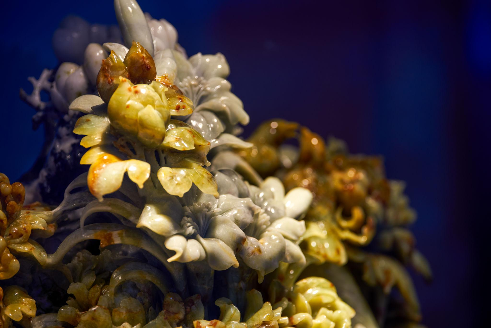
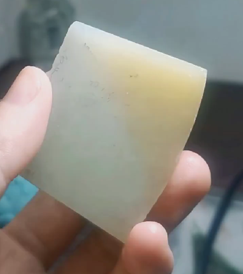
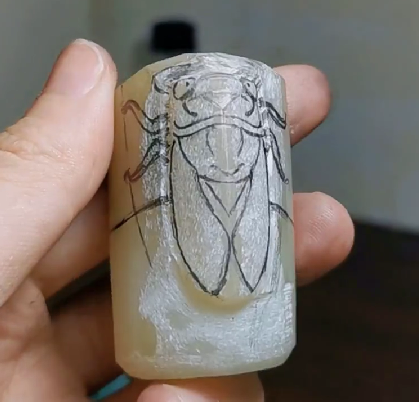
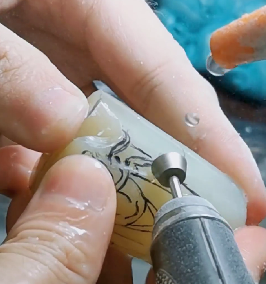
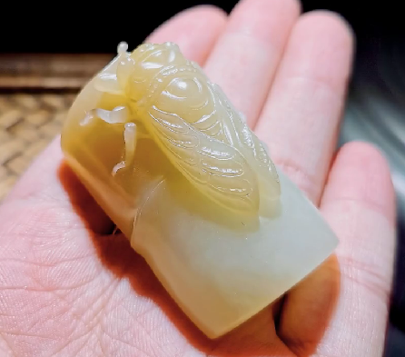

From Raw Stone to Refined Soul
玉是一种十分坚硬的材料，仅靠简单切削难以塑造出优美的形态。 工匠首先会观察原石的颜色、透明度、裂纹以及纹理走向，从中寻找最适合呈现的造型。
在制作过程中，比起强行改变材料，更重要的是保留原石天然形成的纹路与质感。 因此，玉器制作不仅是一项技术工作，更是一种与材料交流的艺术过程。
完成后的玉器作品并不依赖华丽的装饰，而是通过协调的比例、温润的光泽以及细腻顺滑的触感，展现独特的魅力。

检查颜色深浅、纹理走向、透明度以及是否存在裂纹。 在这一阶段确定作品的尺寸与雕刻可行性，同时制定减少材料损耗的方案。
根据原石的形状设计纹样与结构。 结合传统纹饰、自然景物、动物以及吉祥寓意等元素，进一步明确作品的文化象征意义。
先确定整体轮廓，再雕刻细部纹样。 由于玉石硬度极高，相较于速度，更需要精准的力度控制与细致的操作。
通过多道工序反复打磨粗糙表面，使其呈现细腻触感与温润光泽。 最后检查光线反射效果与整体造型比例，进一步提升作品完成度。

原石
设计稿
雕刻过程
完成品玉器工艺的核心在于保留材料本身的自然属性。 颜色较深的部分常被作为主体装饰，而颜色较淡或带有裂纹的部分则可处理为背景或留白，从而将材料的缺陷转化为作品独特的特征。
玉石一旦雕刻失误便难以修复，因此每一道工序都需要谨慎判断。 细致的线条、圆润的曲面以及纤薄的边缘效果，都需要依靠工匠长期积累的经验与反复打磨来完成。
优秀的玉器作品应具备稳定协调的造型、自然温润的光泽以及顺滑无阻的触感。 同时纹样与色彩之间应保持和谐统一，使作品在长时间观赏后仍能展现深厚的文化韵味。